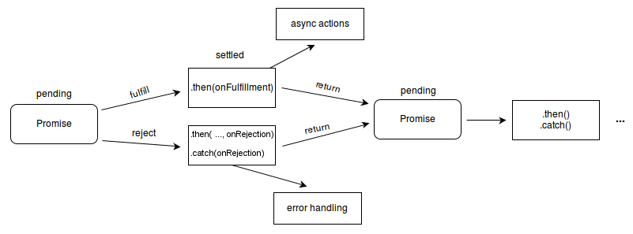

La destructuration d'objet permet d'extraire des données d'un objet.
La syntaxe est la suivante :
const person = {
firstName: 'John',
lastName: 'Doe',
age: 42
};
const { firstName, lastName } = person;Avec ES6 est apparu une nouvelle syntaxe pour créer des fonctions appelée arrow function.
setTimeout(function() {
return console.log('ok');
}, 2000);
setTimeout(() => console.log('ok'), 2000); // Le return est implicite et le ";" inutileconst fs = require('node:fs');
fs.readFile('file.txt', (err, data) => { // Si il n'y a qu'un seul paramètre, les parenthèses sont optionnelles
if (err) {
throw err;
}
console.log(data);
});Une Promise est un objet qui représente la complétion ou l'échec d'une opération asynchrone.
Ce système permet de simplifier l'écriture de code asynchrone en évitant de tomber dans le callback hell.
Pour construire une fonction asynchrone utilisant l'objet Promise, il faut que notre fonction retourne une instance de Promise :
function fetchData() {
return new Promise();
}Le constructeur de Promise prend en paramètre 1 fonction prenant elle-même 2 paramètres.
Le 1er paramètre est une fonction à appeler en cas de succès et le second est également une fonction à appeler en cas d'échec :
function fetchData() {
return new Promise(function(resolve, reject) {
});
}Enfin, il faut implémenter le code de cette fonction :
function fetchData() {
return new Promise(function(resolve, reject) {
if (Math.random() > 0.5) {
setTimeout(function() {
resolve('success');
}, 2000);
} else {
reject('failure');
}
});
}Pour utiliser notre fonction, il faut utiliser la méthode then qui prend en paramètre une fonction à appeler en cas de succès :
fetchData()
.then(function(data) {
console.log(data);
})
.catch(function(error) {
console.log(error);
});Les mots clés async et await permettent de gérer les Promise de manière plus lisible.
La syntaxe est la suivante :
const asyncFunction = async () => {
try {
const data = await fetchData();
console.log(data);
} catch (error) {
console.log(error);
}
};NodeJS est un environnement asynchrone.
Il est donc important de comprendre comment fonctionne l'asynchronisme en JavaScript.
Par exemple, le code suivant pourrait produire un résultat inattendu :
const fs = require('node:fs');
fs.appendFile('file.txt', 'new line', err => {
if (err) throw err;
console.log('New line added to the file!');
});
fs.stat('file.txt', (err, stats) => {
if (err) throw err;
console.log(stats.size);
});Trois solutions pour résoudre ce problème :
C'est-à-dire conserver la syntaxe de la slide précédente et imbriquer les appels de fonctions
(fs.stat dans la fonction de callback de fs.appendFile).
C'est-à-dire utiliser des fonctions asynchrones qui retournent une instance de Promise.
Pour cela, il faut importer le module File System avec la syntaxe suivante :
const fs = require('node:fs').promises;C'est-à-dire utiliser les versions asynchrones des fonctions précédentes :
fs.appendFileSync()In busy processes, the programmer is strongly encouraged to use the asynchronous versions of these calls. The synchronous versions will block the entire process until they complete — halting all connections.
CommonJS est une spécification qui définit un système de modules pour JavaScript en dehors du navigateur.
NodeJS implémente cette spécification depuis sa création.
La syntaxe est la suivante :
const { add } = require('./calcul.js');
console.log(add(1, 2)); // 3module.exports.add = (a, b) => a + b;
module.exports.sub = (a, b) => a - b;ES Modules est une spécification de ECMAScript qui définit un système de modules utilisable dans le navigateur et en dehors.
NodeJS implémente cette spécification depuis la version 13.2.0.
Il faut préalablement ajouter type="module" dans le fichier package.json pour pouvoir utiliser les ES modules.
La syntaxe est la suivante :
import { add } from './calcul.js';
console.log(add(1, 2)); // 3export const add = (a, b) => a + b;
export const sub = (a, b) => a - b;